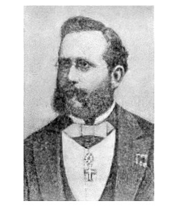

Biographie d'Auguste Kerckhoff (19 janvier 1835 [Nuth] - 9 août 1903 [Därligen])
Auguste Kerckhoff est un linguiste et cryptologue néerlandais du XIXè siècle. Si son nom est resté attaché aux principes de Kerckhoff, une liste de pratiques à utiliser en cryptographie qui demeure étonnamment moderne, il était surtout connu de son vivant pour avoir contribué à la naissance et à la diffusion du Volapük, une langue construite inventée en 1879 par le prêtre allemand Schleyer, qui se veut une langue auxiliaire internationale.
Jean Guillaume Auguste Victor François Hubert Kerckhoff von Nieuwenhoff est né le 19 janvier 1835 à Nuth, en Hollande. Son père est un homme de loi, il est aussi le maire de Nuth. Ce village est situé dans le Limbourg, qui est à la frontière entre la partie néerlandophone et la partie francophone de la Hollande du début du XIXè siècle. De plus, la famille de Kerckhoff a servi le gouvernement local français lors de l'occupation napoléonienne, et est ouvertement francophile. Ceci peut expliquer pourquoi tous les prénoms de Kerckhoff sont typiquement français.
Auguste Kerckhoff suit des études éclectiques, apprenant la philosophie à Liège, puis les sciences naturelles à Louvain. Il enseigne ensuite à Eindhoven, avant de quitter son pays natal pour s'installer en France en 1860, devenant pendant 3 ans professeur à Meaux, puis pendant 10 ans professeur à Melun. Il épouse en 1863 Marie Thévenin, avec qui il a une fille l'année suivante. Il obtient la nationalité française en 1873 et la même année part à Bonn étudier la littérature allemande. Cela n'est possible qu'après une enquête de moralité : la France est en effet meurtrie par la défaite de 1871 contre l'Allemagne, et Kerckhoff est soupçonné de relations avec l'ennemi.
A Bonn, Kerckhoff gagne sa vie comme précepteur du jeune comte São Mamede, qui deviendra secrétaire du roi du Portugal. Il obtient son doctorat de littérature allemande, puis retourne en France, à Neuilly sur Seine, où il est précepteur de deux autres garçons de la famille São Mamede. En 1881, il devient pour 10 ans professeur d'allemand à HEC. C'est son activité pendant cette décennie qui le fait passer à la postérité. D'une part, il publie en 1883 l'article La cryptographie militaire dans Le journal des Sciences Militaires. Cet article s'impose de suite comme une référence : il met en perspective le contexte contemporain, comme la nécessité de sécuriser les échanges par télégraphe, avec les méthodes de chiffrement. Il énonce les célèbres principes de Kerckhoff, dont le principal est que la sécurité d'un système de chiffrement ne doit pas consister en le secret de la méthode, mais en une clé facilement échangeable. Un mystère demeure : comment Kerckhoff en est venu à des considérations sur la cryptologie (rien dans ses études n'indique un intérêt particulier pour cela), et comment a-t-il pu si bien se documenter?
D'autre part, à partir de 1885, en fondant l'Association Française pour la propagation du Volapük, Kerckhoff est un des principaux acteurs de la dissémination du Volapük en France. Il donne des conférences sur ce sujet, écrit des cours, mais réfléchit aussi à des améliorations qu'on pourrait apporter à cette langue. Ce dernier point l'amène à un conflit avec Schleyer, l'inventeur du Volapük, puis à son exclusion des "Volapükistes" en 1891.
Les derniers emplois d'Auguste Kerckhoff, dans les années 1890, l'emmènent aux lycées de Mont-de-Marsan, puis de Lorient. Il décède le 9 août 1903, fauché par un train à la gare de Därligen, en Suisse. Il est enterré à Paris, au cimetière du Montparnasse, quelques jours plus tard.
Source principale : Jean-Claude Caraco, Rémi Géraud-Stewart and David Naccache, Kerckhoffs' Legacy, IACR ePrint, Mai 2020.